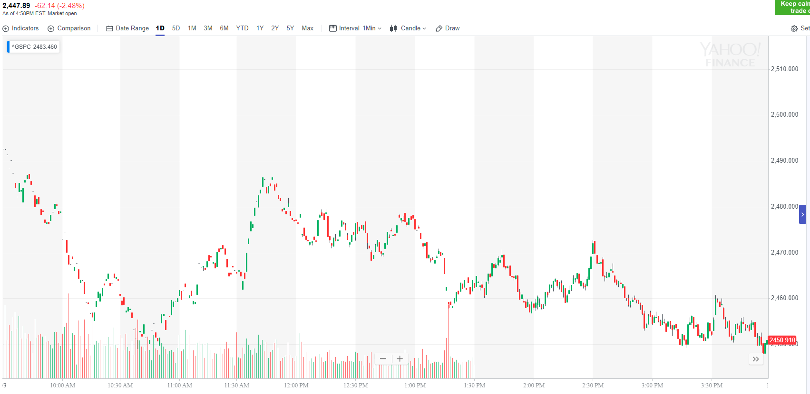
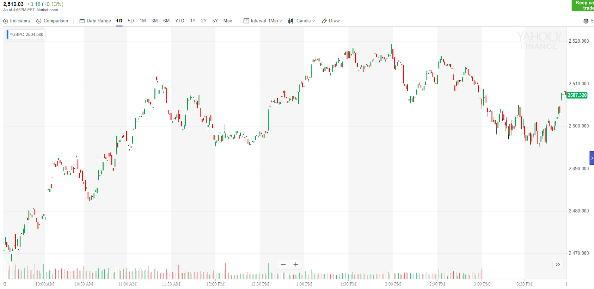

趋势理论
- 市场总是处于一个走势当中，不是跌势就是涨势。跌势结束后，一定是涨势，涨势结束后，一定是跌势。
- 趋势有时又有嵌套，嵌套可以有两层甚至三层。一般两层比较常用。在应用一级趋势的时候，要注意是否有更大的趋势。
这个趋势会是全天的趋势。通常会用长时间的震荡（超过2个小时）来制造趋势。
- 大部分走势都需要一个酝酿的过程。但是，一开盘就不断下跌，幅度很大是非常强的跌势，不需要设置，也不会填空。不需要理由。只要记住就好。
同样，一开盘就不断上涨的是很强的升势，不需要准备，也不会填空。不需要理由。 但是也有例外，有时候，它一开盘后连续走低或者连续冲高，是为了将来大幅反向运动。
所以这个也是很难说会如何。 要看它连续运动的形状已经运动后，的情况。
- 如果在一个主要走势中，出现快速的，幅度很大的反向走势。一般这个反向走势，只在刚刚开始启动的时候，有一些调整。然后就一路大跌或者大涨。
幅度很大。这样的走势说明，主要走势仍然没有转向。可以做完反向走势后，继续做主要走势。
趋势理论
开盘不断上涨形成升势
各种趋势的走势
TOP
开盘不断上涨形成升势

图示：一开盘先不断上涨，然后走低，升高，反复出现高点。每次涨幅不大，但是回到原来的关键点。说明是很强的升势。
轻易不会反转。
各种趋势的走势

图示：12：40出现新高后，快速从高处下跌，幅度很大。速度很快。这个说明仍然是升势。一旦结束后，可以寻找机会做多。

图示：1:20走出两端下跌走势。而且第二段加速。说明是一个底部。它立刻反弹。
到了2470的地方停止。回调。回到原位。好像结束了。但是如果仔细看它在那里的样子。它没有表现出来加速的样子。
而是上涨后，停止。这个说明它没有结束走势。它果然再次反弹。2：30加速上涨。这样才到了顶部。这个说明，
幅度什么的并不重要。加速走势，才是一个走势结束的标志。

图示：它一直处于升势，然而它的第二波上涨后，一直在高位徘徊。从1：00到2：30
前后长达一个多小时。没有迅速下来。这样。它冲高后的真空得不到填补，而它下来的力量必然很大。失去了升势的力量。

图示：大盘开盘形成跌势，出现了两段走势。它反弹后，超过了2485.说明是升势了。
下跌走势已经结束了。中间震荡很久。让我不知道是跌势还是涨势。但是如果用这个来判断就明确了。
关键在于判断走势是否结束了。这个用关键点，还有两段走势来判断。当然也有别的走势。

图示：11：40下跌趋势在小的两段走势加双底走势中结束，成为升势，
升势在1：00到1：30分的加速上升走势中结束。开始跌势。

图示：1：00出现新高后，立刻下跌，速度很快。新高只比原来的高点高一些。
2：00再次出现新高。它的高点也是稍微高一些，不是很高。立刻回调。从12：10到3：00，可以看到大盘没有怎么涨。
一直在一个小的范围徘徊，而且创新高后，回调很快。这样都预示着会有一轮暴涨。应该买期权同时做多ES。然后一直拿着到收盘。
这个一旦发动不会很容易回调的。

图示：大盘从11：20开始震荡，明显它处于跌势，关键在于它是否转向。
它不断的反弹，在低位停留很短时间。它在创新低的时候，从高位创新低，而且在底部停留很短时间就大幅反弹了。
这个时候可以买期权做空。

图示：开盘后，冲高大跌，下跌后，跌势不大，就开始走平。走平期间，
出现明显低于走平开始的点。这进一步证明了它后面会大跌。1:40开始正式下跌，从2630跌倒了2608，反弹后震荡10分钟。
继续从2610跌倒了2590.